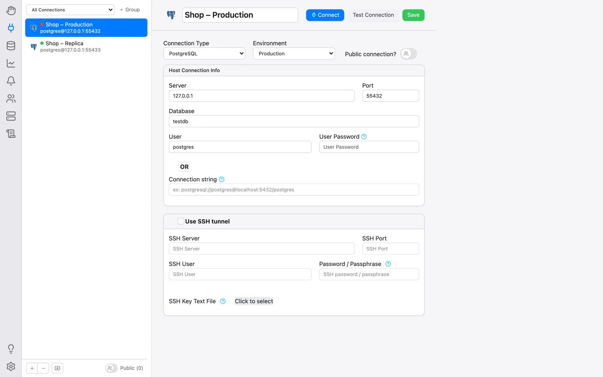

Créer des utilisateurs et des connexions
Connexion en tant qu’utilisateur admin
OmniDB est livré uniquement avec l’utilisateur admin. Si vous utilisez la version
serveur, la première chose à faire est de vous connecter en tant qu’admin avec le mot de passe
aléatoire à usage unique que omnidb-server a affiché dans sa sortie de journal lors de la création
d’une nouvelle base de données applicative (la ligne contenant initial login: admin / …), puis de le changer
dans Paramètres. Un mot de passe perdu peut être réinitialisé avec omnidb-server --set-password admin. Après 10 tentatives de connexion échouées pour le même nom d’utilisateur ou la même
adresse IP cliente, la connexion est bloquée pendant 15 minutes. L’application de bureau n’a aucune connexion : elle fonctionne
comme un unique utilisateur local, si bien que tout ce qui concerne la gestion des utilisateurs
décrite ci-dessous n’y existe tout simplement pas.
Se repérer dans l’interface
Tout l’espace de travail se pilote depuis la barre verticale d’icônes du bord gauche de la fenêtre : Bienvenue, Connexions (l’icône de la prise), Base de données, Supervision, Notifications, Autorisations, Utilisateurs connectés et Extraits en haut, puis Prise en main, Compte (version serveur uniquement) et Paramètres (la roue dentée) en bas. Le survol d’une icône affiche son nom. Consultez Gérer les bases de données pour savoir comment les sections fonctionnent ensemble, et Paramètres et langues pour la langue de l’interface et les autres préférences.
Création d’un autre utilisateur
Ouvrez Paramètres en bas de la barre, choisissez la catégorie Compte puis cliquez sur Gérer les utilisateurs. Seul un super-utilisateur dispose de ce bouton : dans les paramètres d’un utilisateur ordinaire, la section Compte n’apparaît même pas.
La fenêtre Gestion des utilisateurs liste les utilisateurs existants. Cliquez sur Ajouter un nouvel utilisateur (l’icône du personnage avec un plus) pour insérer une nouvelle ligne d’utilisateur vide, affichée comme (information en attente) tant que vous ne l’avez pas remplie. Renseignez le Nom d’utilisateur et le Nouveau mot de passe, activez Superutilisateur ? si le nouvel utilisateur doit en être un, puis cliquez sur Enregistrer. Vous pouvez créer autant d’utilisateurs que vous voulez, modifier les utilisateurs existants et en supprimer un en cliquant sur la croix rouge de la colonne des actions.
Pour vous déconnecter, cliquez sur l’icône Compte (le personnage en bas de la barre) puis sur Déconnexion.
La suppression d’un utilisateur, ou le retrait de son statut de superutilisateur, prend effet immédiatement, y compris pour les sessions de cet utilisateur déjà ouvertes.
La section Connexions
Cliquez sur l’icône de la prise dans la barre. Les connexions forment une section à part entière de l’espace de travail, et non une fenêtre surgissante : une vue scindée avec la liste des connexions enregistrées dans le panneau latéral de gauche et, à droite, le formulaire et les boutons de la connexion sélectionnée.
Chaque ligne de la liste affiche l’icône du moteur de base de données, le nom de la connexion et,
en dessous, l’utilisateur@serveur:port visé (ou la chaîne de connexion, ou encore la
cible SSH pour une connexion de type terminal). Une petite pastille de couleur indique
l’environnement de la connexion, et une icône de clé signale une connexion passant par un tunnel
SSH.
Création de connexions
OmniDB prend en charge PostgreSQL, MySQL, MariaDB, Oracle, MS SQL Server, Firebird et SQLite, ainsi qu’un type de connexion Terminal qui ouvre un shell SSH au lieu d’une base de données. La liste Type de connexion affiche PostgreSQL en premier, puis les autres par ordre alphabétique, et Terminal en dernier.
Pour SQLite, la connexion pointe vers un fichier de base de données (sur la machine où
s’exécute omnidb-server) ; si le fichier n’existe pas encore, Tester la connexion le signale
et le fichier est créé lors de la première utilisation de la connexion. Sur un serveur multi-utilisateur, les connexions
SQLite sont réservées aux superutilisateurs, et certains paramètres de chaîne de connexion PostgreSQL qui lisent des
fichiers sur le serveur sont refusés — voir Sécurité et serveur
multi-utilisateur.
Le bouton + sous la liste crée une connexion. Saisissez son nom dans l’en-tête du
formulaire de droite, choisissez le Type de connexion et remplissez la
carte Informations de connexion au serveur : Serveur, Port,
Base de données, Utilisateur et, facultativement, Mot de passe utilisateur. À la place de ces
champs individuels, vous pouvez remplir une seule Chaîne de connexion (par exemple postgresql://postgres@localhost:5432/postgres) et laisser le reste vide.
Une fois terminé, cliquez sur Enregistrer en haut à droite du formulaire.

Tester la connexion, juste à côté, essaie la connexion sans l’ouvrir et annonce soit Connexion réussie., soit l’erreur exacte renvoyée par la base de données. Le bouton − sous la liste supprime la connexion sélectionnée ; il reste désactivé pour une connexion actuellement ouverte dans un onglet.
Mots de passe
Le champ Mot de passe utilisateur est facultatif, et les deux possibilités ne se comportent pas de la même façon :
- Rempli : le mot de passe est enregistré dans la base de configuration propre à OmniDB et réutilisé automatiquement à chaque ouverture de la connexion. Il est chiffré (AES-256-GCM) avant d’être écrit dans ce fichier, avec une clé conservée dans le trousseau de secrets propre au système d’exploitation (Keychain sur macOS, Gestionnaire d’identification sur Windows, Secret Service sur Linux) plutôt que dans le fichier lui-même — le fichier de la base de données seul ne suffit donc plus à lire les mots de passe qu’il contient. En l’absence d’un tel trousseau, OmniDB se rabat sur un fichier de clé conservé à côté de la base de données.
- Laissé vide : rien n’est enregistré et OmniDB demande le mot de passe à l’ouverture de la connexion. Ce que vous saisissez n’est conservé que dans la mémoire du serveur, pour votre session et cette connexion, pendant 30 minutes — ensuite, OmniDB le redemande.
Pour PostgreSQL, OmniDB cherche en outre le mot de passe dans votre fichier .pgpass
au moment de la connexion, en retenant la même entrée que libpq : une connexion sans mot de passe
enregistré peut donc s’ouvrir sans rien demander. Dans l’application macOS en bac à sable, la boîte
de dialogue propose Accorder l’accès à .pgpass : vous désignez
le fichier une fois, et chaque connexion ultérieure y récupère elle-même son mot de passe.
Si la base de données refuse la tentative, la boîte de dialogue reste affichée avec l’erreur reçue par OmniDB (fe_sendauth: no password supplied, un échec d’authentification, un serveur arrêté, etc.), ce qui vous permet de corriger le mot de passe et de réessayer.
Importer des connexions depuis .pgpass
L’icône d’import de fichier, à côté des boutons + et −, lit un fichier
.pgpass et crée une connexion PostgreSQL par ligne concrète qu’il contient, sous la
forme d’une simple chaîne postgresql://utilisateur@hôte:port/base sans mot de passe
enregistré : l’idée est de continuer à s’authentifier depuis ce fichier plutôt que de recopier des
mots de passe dans OmniDB. Les lignes contenant des jokers (*) sont ignorées, tout
comme celles qui correspondent déjà à une connexion existante.
Organiser la liste
- Ordre : faites glisser une ligne à l’emplacement de votre choix. La disposition est enregistrée par utilisateur et survit aussi bien à un rechargement qu’à un redémarrage. Les connexions créées ensuite s’ajoutent en bas.
- Groupes : le sélecteur en haut du panneau latéral limite la liste à un seul groupe. + Groupe crée un groupe, et le bouton … voisin propose Renommer, Gérer les connexions (les lignes deviennent des cases à cocher pour choisir celles qui appartiennent au groupe, à valider par Enregistrer les modifications) et Supprimer.
- Connexions publiques : l’interrupteur Connexion publique ? du formulaire rend la connexion utilisable par tous les autres utilisateurs d’OmniDB. Seul son propriétaire peut la modifier ; les autres utilisateurs ne voient jamais son mot de passe enregistré (un mot de passe contenu dans sa chaîne de connexion est masqué pour eux), et leur Tester la connexion teste toujours le serveur enregistré. L’interrupteur Public (n) en bas du panneau latéral affiche ou masque dans votre propre liste les connexions publiques des autres utilisateurs.
- Environnement : marquer une connexion Production, UAT, Développement ou Archive colore sa pastille dans la liste ainsi que le bord de son onglet ouvert — il s’agit avant tout d’un garde-fou, pour qu’attraper le mauvais onglet se voie immédiatement.
Ouvrir une connexion
Cliquez sur Connecter dans le formulaire, ou double-cliquez simplement sur une ligne de la liste : OmniDB l’ouvre dans un nouvel onglet externe de connexion (Connection Outer Tab), comme nous le verrons au chapitre suivant. Un clic droit sur une ligne ouvre un menu contextuel (Connecter/Modifier/Supprimer — Supprimer n’apparaît pas pour une connexion déjà ouverte), et un clic droit dans un espace vide de la liste propose Nouvelle connexion/Actualiser.
Utilisation des tunnels SSH
OmniDB permet de se connecter à n’importe quelle base de données distante via des tunnels SSH. Cochez Utiliser un tunnel SSH dans le formulaire de la connexion concernée : cela active les champs situés en dessous :
- Serveur SSH : le serveur auquel vous vous connectez via SSH. Sa clé d’hôte doit déjà
figurer dans le fichier
~/.ssh/known_hostsde l’utilisateur du système d’exploitation qui exécute OmniDB, faute de quoi le tunnel est refusé — voir Sécurité et serveur multi-utilisateur ; - Port SSH : le port du serveur SSH (22 par défaut, mais n’importe quel port est possible) ;
- Utilisateur SSH : le nom d’utilisateur du système d’exploitation avec lequel vous vous connectez au serveur SSH ;
- Mot de passe / phrase secrète : le mot de passe de l’utilisateur du système d’exploitation (ou la phrase secrète de la clé ci-dessous). Laissé vide, OmniDB le demande à chaque ouverture du tunnel sans jamais l’enregistrer. Si vous remplissez le champ Fichier texte de clé SSH, le mot de passe est facultatif ;
- Fichier texte de clé SSH : le contenu de la clé SSH privée locale permettant de vous connecter au serveur SSH. OmniDB lit le fichier que vous désignez et en enregistre le texte, pas le fichier lui-même. Si vous remplissez ce champ, vous pouvez aussi remplir Mot de passe / phrase secrète, mais il s’agira alors de la phrase secrète de la clé privée SSH.
Tout ce que vous enregistrez ici — mot de passe SSH, phrase secrète et texte de la clé — atterrit dans la même base de configuration locale d’OmniDB que les mots de passe de base de données, et chiffré de la même façon.
Lorsque vous utilisez des tunnels SSH, vous devez également remplir tous les champs de la base de données en conséquence. Mais au lieu d’être relatifs au serveur OmniDB, ils le seront au serveur SSH. Cela peut se présenter selon 2 scénarios, expliqués ci-dessous.
Si la base de données se trouve sur le même serveur que celui auquel vous vous connectez en SSH, vous êtes dans cette situation :

Dans ce scénario, le Serveur de la base de données sera 127.0.0.1, puisque la
base est sur la même machine que le Serveur SSH.
Mais la base de données peut se trouver en dehors du serveur SSH, comme ceci :

Ici, le Serveur de la base de données doit être 192.168.0.10, car c’est
l’adresse par laquelle le serveur SSH atteint le serveur de base de données.